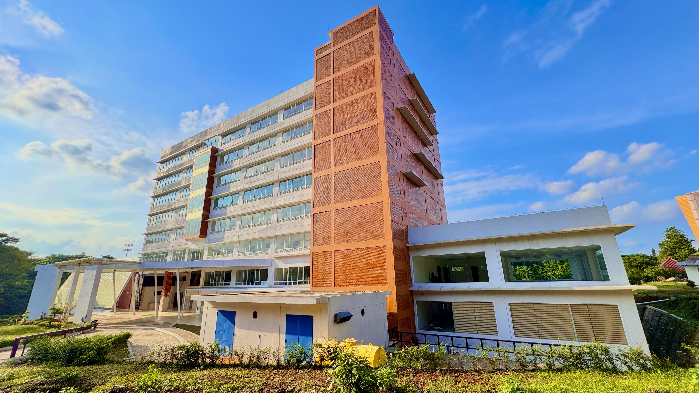
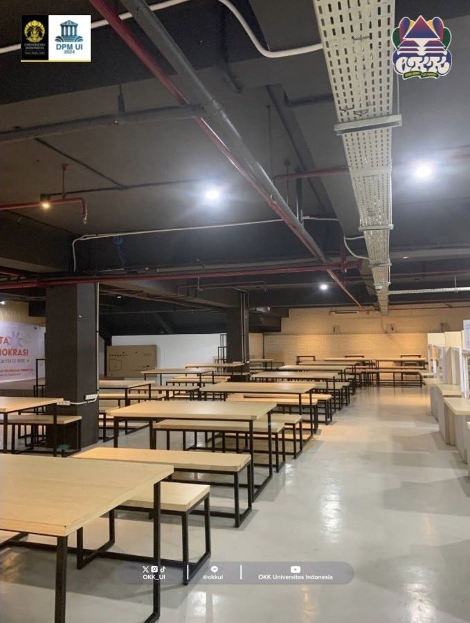
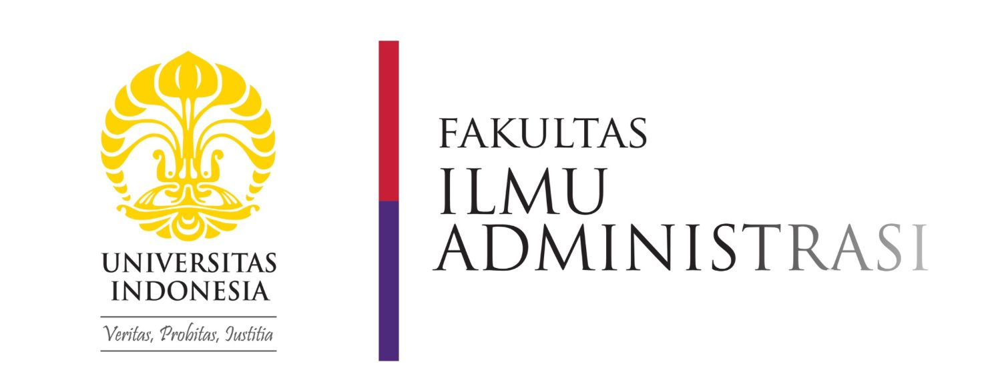
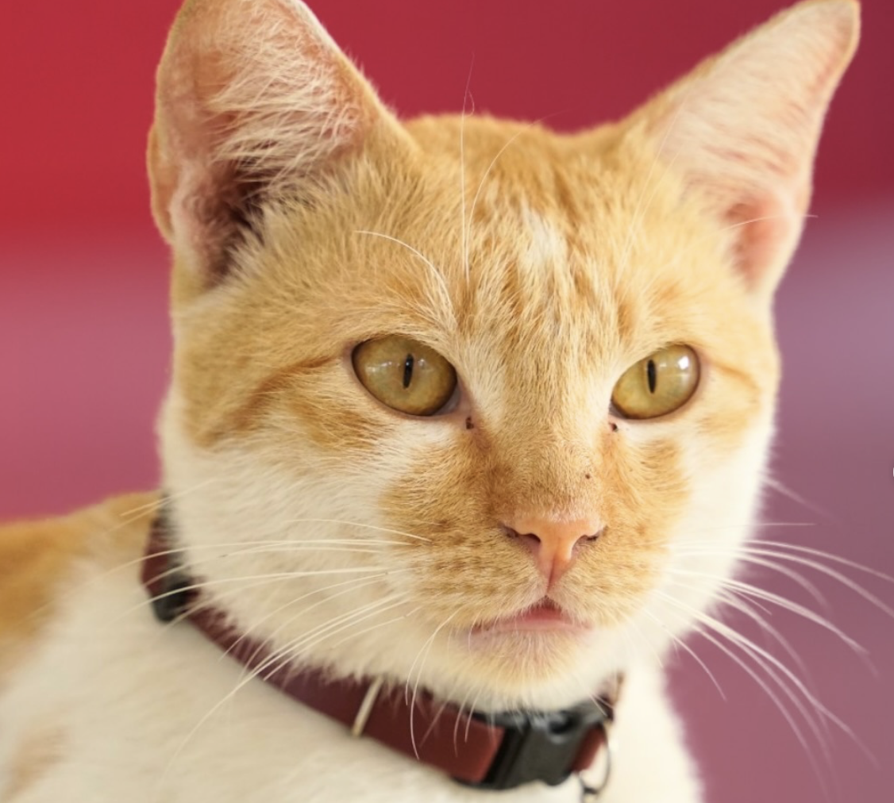
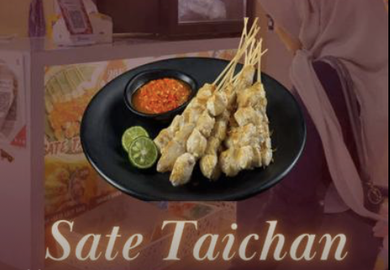

Gedung FIA baru.

BAMEN (bawah basement) "kantin lama FIA di FISIP".

FIA Lounge "kantin baru FIA".


Gedung FIA baru.

BAMEN (bawah basement) "kantin lama FIA di FISIP".
FIA Lounge "kantin baru FIA".

Spot foto ikon FIA lama.

Kucing ikon FIA (Adhi).

Makanan ikon BAMEN, Taichan.
Seiring berjalannya waktu, lingkungan FIA UI mengalami berbagai perkembangan yang membentuk identitasnya hingga saat ini. Setelah sepuluh tahun berdiri, FIA akhirnya memiliki gedung baru yang menjadi pusat kegiatan akademik dan non-akademik, menggantikan ketergantungan sebelumnya pada fasilitas FISIP. Perubahan ini juga terlihat pada area kegiatan mahasiswa, dari kantin lama di basement FISIP yang dikenal dengan nama Bamen, hingga hadirnya FIA Lounge sebagai kantin baru yang lebih representatif dan nyaman bagi sivitas akademika. Elemen-elemen ikonik yang pernah melekat pada FIA, seperti tembok ungu sebagai spot foto favorit mahasiswa, kini menjadi bagian dari sejarah visual yang terus dikenang. Kehadiran kucing kampus bernama Adhi turut menambah karakter khas lingkungan FIA yang bersahabat. Selain itu, kuliner seperti sate taichan yang populer di Bamen tetap menjadi bagian dari budaya mahasiswa yang sulit dipisahkan. Keseluruhan perubahan dan kenangan ini mencerminkan dinamika perkembangan FIA UI dalam menciptakan lingkungan belajar yang lebih mandiri, nyaman, dan berkarakter.